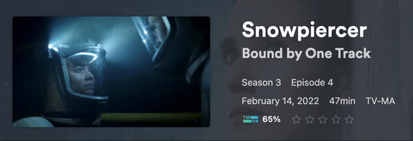

Integrations
In addition to Connections, TitleCardMaker can also integrate directly with services (such as Plex or Tautulli) to trigger specific functionality in TCM - such as automatically creating Title Cards for all newly added content.
For example, Plex can be configured to notify TCM to make/remake Title Cards when an event (in this case rating an Episode) occurs:

Plex
Plex Pass Required
Plex requires that you (the server owner) have a Plex Pass in order to enable Webhooks.
Plex can be configured to trigger Card creation in TCM via Webhooks.
Enabling
-
Configure your Plex Connection inside TCM - see here for details.
-
Take note of the number on the right side of the Plex Connection details in TCM - e.g.
1,2, etc. You will need this later. -
Open Plex.
-
In the top-right corner of Plex, click Settings (the wrench icon).
-
From the left-hand sidebar, navigate to Webhooks.
-
Click , and then enter the URL of your TCM server (including the port), followed by
/api/webhooks/plex?interface_id=999. Replace999with the number you noted from Step 2.Example
For my server, this looks like
http://192.168.0.29:8000/api/webhooks/plex?interface_id=2 -
Click .
-
From the left-hand sidebar, navigate to Network under Settings.
-
Make sure you're viewing Advanced options, and check the Webhooks checkbox at the bottom of the page.
-
Click .
Customization
By default, TCM will trigger Card creation for new content (library.new) and
recently finished content (media.scrobble). If you would like to trigger new
Cards for other events (such as rating an Episode, as shown above), do the
following:
-
Within Plex, edit the Webhook URL to include
&trigger_on=..., replacing...with a comma-separated list of triggers from Plex. A complete list is here, but TCM will only be able to actually trigger onlibrary.new,library.on.deck,media.pause,media.play,media.rate,media.resume,media.scrobble,media.stopandplayback.started. This argument islibrary.new,media.scrobbleby default.Example
The example above used the following URL:
http://192.168.0.29:8000/api/webhooks/plex?interface_id=2&trigger_on=library.new,media.scrobble,media.rate -
Click .
Sonarr
Sonarr v4 Required
The Webhook utilized by TCM was reworked in Sonarr v4; meaning this is required for the integration.
Sonarr can be configured to create new Cards, or add/delete Series in TCM via Webhooks.
Enabling
-
Open Sonarr.
-
From the left-hand sidebar, navigate to
Settings, thenConnect. -
Click the plus icon to create a new Connection. At the bottom of the dialog, click Webhook.
-
Give this a descriptive name.
-
Leave the Tags field blank (unless you'd like to filter by tag).
Depending on the type of integration you would like to enable, do the following:
-
To configure Sonarr to instruct TCM to add Series as they're added to Sonarr, de-select all triggeres except
On Series Add. -
Enter the URL of your TCM server (including the port), followed by
/api/webhooks/sonarr/series/add. -
Ensure the Method is
POST. -
Click .
-
To configure Sonarr to instruct TCM to remove Series as they're deleted from Sonarr, de-select all triggers except
On Series Delete. -
Enter the URL of your TCM server (including the port), followed by
/api/webhooks/sonarr/series/delete. -
If you would like TCM to not delete the Title Card files themselves, add
?delete_title_cards=falseto the end of the URL. -
Ensure the Method is
POST. -
Click .
-
To configure Sonarr to instruct TCM to create Cards for new Episodes as they're added to Sonarr, de-select all triggers except
On Import CompleteandOn File Upgrade. -
Enter the URL of your TCM server (including the port), followed by
/api/webhooks/sonarr/cards. -
Ensure the Method is
POST. -
Click .
Multiple of the above integrations may be enabled at once, if desired.
Tautulli
Plex Webhooks are Preferred
Plex Webhooks are the preferred integration for most users. This is due to their faster speed, ease of setup, and flexibility in trigger conditions.
Tautulli can be set up to trigger Card creation for newly added or watched content (just like Plex Webhooks) via the builtin Notification Agents system.
Enabling
-
In TCM, under the Plex Connection form that has a Tautulli connection, click .
-
In the launched window, enter the root URL to your instance of Tautulli.
Example URL
Although your local IP address will obviously be different, this IP should be like
http://192.168.0.29:8181/. -
Open Tautulli and navigate to the Settings by clicking the Gear icon in the top right.
-
From the left navigation bar, open the
Web Interfacesettings. -
Scroll to the bottom, and ensure the
Enable APIcheckbox is checked, then show and copy the generated API key.Security Warning
Keep this API key private, as it can be used to remotely access and modify Tautulli.
-
Back within TitleCardMaker, paste the API key from Step 5 into the API key input box.
-
If you want Tautulli to trigger TitleCardMaker when episodes are watched, and not just when episodes are added, then leave the
Trigger on Recently Watchedcheckbox checked. I also recommend entering your username in the username input so that Tautulli is only triggered when you watch content. -
Click .
-
Open Plex (on a computer) and navigate to your server settings via the Wrench icon in the top right corner.
-
From the left navigation bar, scroll down to
Libraryunder theSettingssection and take note of yourVideo Played Thresholdsetting (this is an Advanced Setting). -
Back in Tautulli, open the
Generalsettings from the sidebar, and find theTV Episode Watched Percentsetting. Set this to 1-2% higher than the Plex setting from Step 9.Example Setting
For a Plex played threshold of 90%, the appropriate Tautulli setting is 91% or 92%.
Why is this Necessary?
Because this integration is so fast (typically triggering within 5 seconds of finishing an Episode) - it is imperative that Tautulli triggers TCM to update a Title Card after an Episode's watch-status has had time to update within Plex.
Once created, you can close the box within TCM. Unlike the other Connections, your Tautulli connection details will not be stored (and so will not appear) in TCM - this is because TCM only submits API requests to Tautulli to create an agent. Afterwards, it is Tautulli that sends data to TCM, and so no active connection is required.